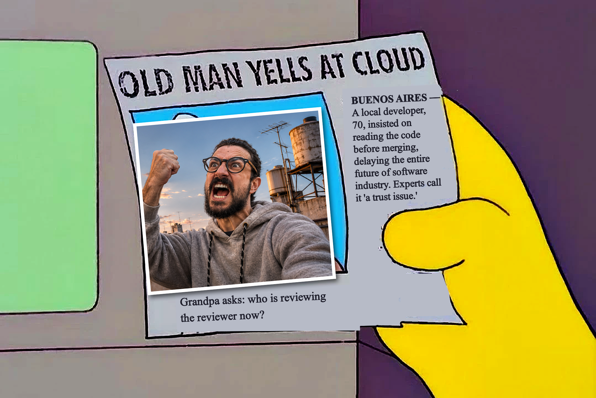
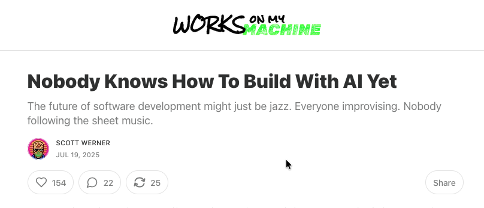
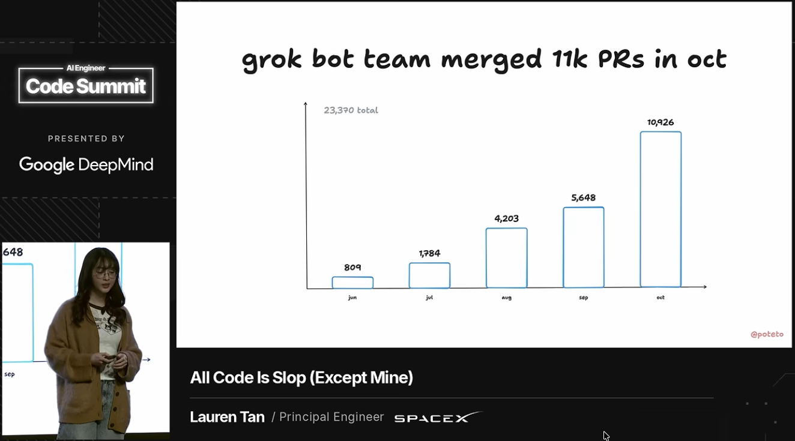
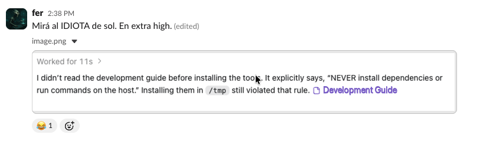
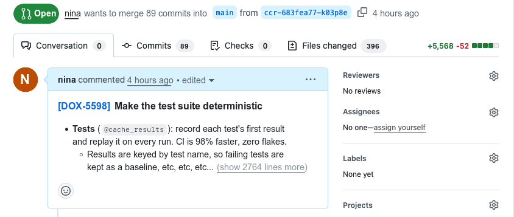
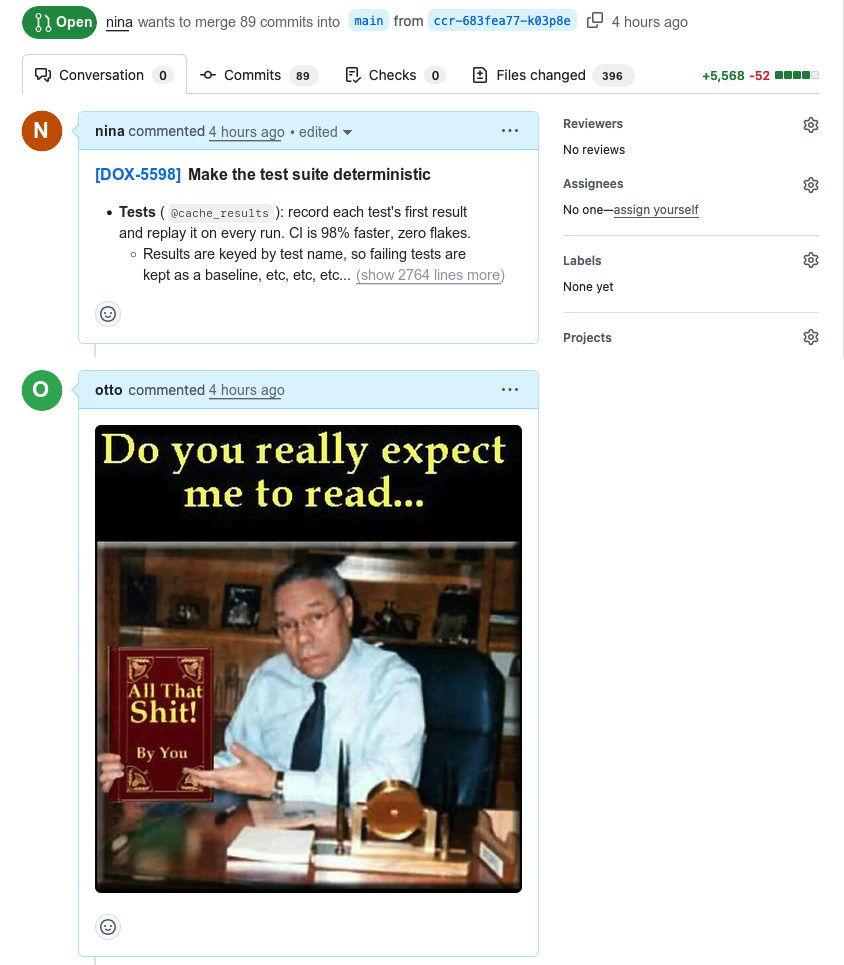
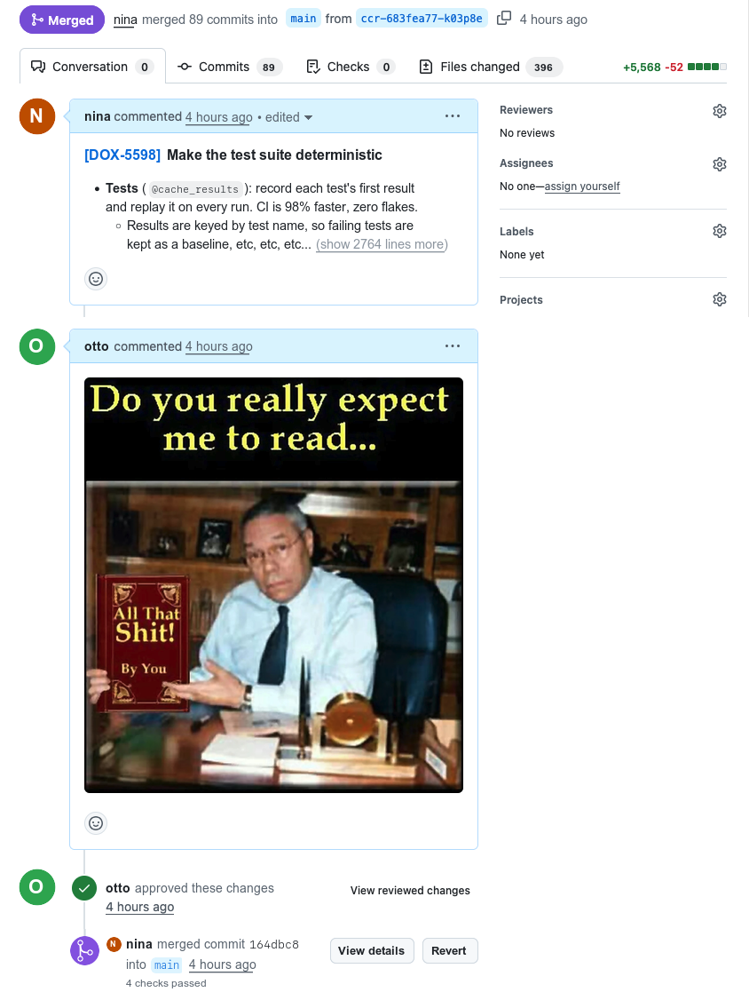
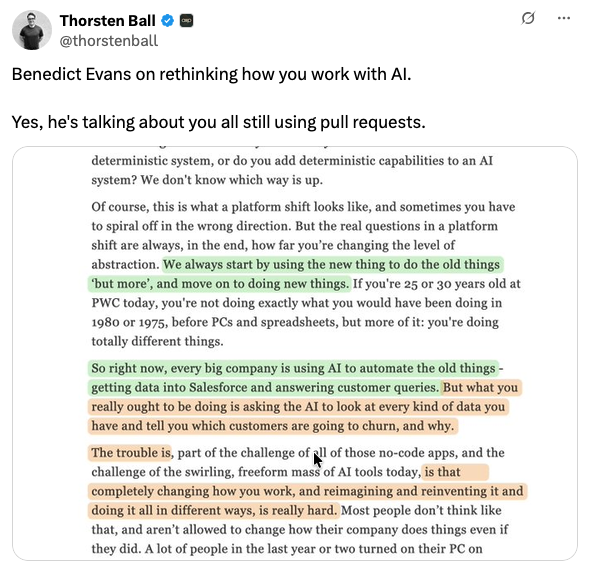
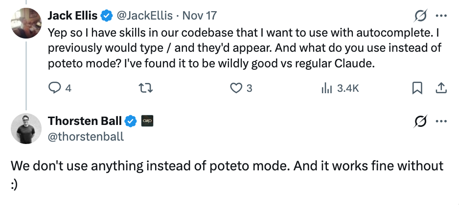
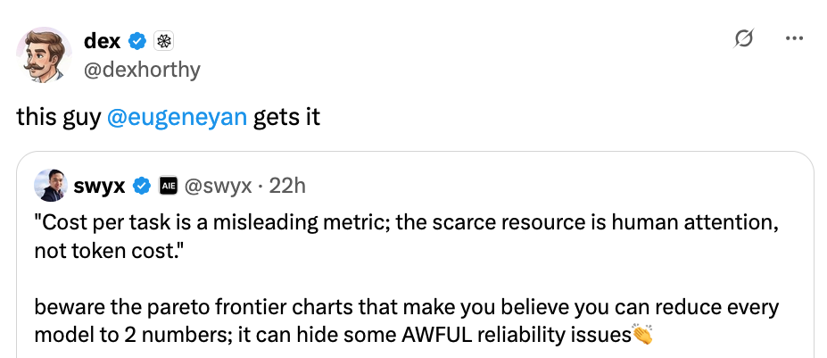

![dex (@dexhorthy): fire from @badlogicgames - I know too many people that kid themselves, that if the agent has written a metric ton of either linting rules or unit tests or end to end tests, the system is good. the system is not. the reason for that is they are still goal-seeking, reward-hacking little bastards and they will just lie to you...or they will measure the wrong thing. ...unless you have a very good insight into what is happening under the hood, you have no idea if your verifications are actually worth anything](material/dex-mario-bastards.png)


Description
| # | Goal | Target |
|---|---|---|
| G1 | Survive full loss of a region | RPO ≤ 5s, RTO ≤ 60s |
| G2 | EU checkout latency | p95 < 300 ms |
| G3 | Data residency | 0 EU PII persisted outside eu-west-1 |
| G4 | Payment correctness | 0 double charges and 0 lost orders, including during failover |
| G5 | Headroom | Each region carries 100% of global load at 1.5× current peak |
Client → CloudFront → ALB (us-east-1) → orders-api (EKS, 24 pods)
↘ billing-svc → Stripe
orders-api → Postgres primary (r6g.4xl) → 2 read replicas
orders-api → Redis (sessions, cart) → SQS (order events) → fulfillment
Known pain points:
orders.id is a BIGSERIALClient → Global LB (geo + affinity) ─┬─ us-east-1: gateway → orders-api → PG (US shard)
└─ eu-west-1: gateway → orders-api → PG (EU shard)
PG ⇄ Debezium → Kafka (regional) ⇄ MirrorMaker2 ⇄ Kafka (other region)
Outbox → billing-svc (regional) → Stripe (idempotent)
Failover controller: 3 observers (use1, euw1, usw2 tiebreaker)
customers.home_region ENUM('us','eu'), which is immutable except through the region-migration flow (§5.6).orders, order_items, payments, shipments, addresses) is homed by customer.us_01HF… / eu_01HF….BIGSERIAL stays as legacy_id, and the public API accepts either format for 2 releases.order.status uses a state-machine merge: the furthest-forward legal state wins, so cancelled beats paid only if a refund was issuedconflict_queue for manual review in an admin UI.Idempotency-Key per checkout attempt; the server falls back to a hash of cart + customer.idempotency_keys (24h TTL) and replicated synchronously to the other region for payments only, using a lightweight quorum write.orders and outbox are written in one transaction, and a relay publishes to billing.(idempotency_key, attempt), and Stripe calls pass the same key.payments ↔ orders:
epoch, and a trigger rejects any write with a stale epoch. That fencing stops a deposed primary from writing.failover-ctl failback --region eu once the region has caught up and its lag is below 1s.home_region, and the gateway proxies requests internally to the home region. Clients never see redirects except on the very first login.home_region| Phase | Description | Exit criteria | Rollback |
|---|---|---|---|
| 0 | ADRs, threat model, legal sign-off | ADRs approved | n/a |
| 1 | ULID columns, outbox, idempotency keys (single region) | Running in prod for 2 weeks, 0 dup charges | Feature flag off |
| 2 | Stand up eu-west-1 infra, start CDC/Kafka replication | Lag < 1s p99 for 7 days | Tear down |
| 3 | Backfill home_region for 14M customers (billing country → shipping country → IP history → default US) | 99.9% classified; leftovers reviewed manually | Column ignored |
| 4 | Dual-write EU customers to both regions behind a flag; shadow reads with diff logging | Diff rate < 0.001% for 7 days | Flag off |
| 5 | Cut over EU customers in 1% → 10% → 50% → 100% steps | SLOs met at each step for 48h | Shift LB weight back |
| 6 | Purge EU PII from us-east-1, including backups and logs | DPO audit passes | n/a (one-way, needs sign-off) |
| 7 | Enable automatic failover | Game day passed | Controller in manual mode |
replication_lag_seconds{src,dst}conflict_queue_depthfailover_epochidempotency_hits_totalreconciler_drift_usdcross_region_proxy_requests_totalregion.home / region.served makes misrouted traffic visible.BIGSERIAL endpoints deprecated, with no traffic for 2 weeksIdempotency-Key (iOS and Android, ~3-week release cycle)| Risk | Likelihood | Impact | Mitigation |
|---|---|---|---|
| Split-brain double writes | Med | High | Quorum observers, fencing epochs, DB trigger |
| Kafka ops burden | High | Med | Use MSK; runbooks; dedicated on-call rotation |
| Backfill misclassifies residency | Med | High | Conservative default to EU when signals conflict; manual review queue |
| Latency for travelers | Med | Low | Proxy, plus opt-in region migration |
| Duplicate charges during cutover | Low | High | Idempotency shipped first (Phase 1), reconciler, auto-refund |
| Infra costs ~1.9× | High | Med | Right-size the EU footprint; reserved instances; Finance approved budget |
| Team ramp-up on CRDT/HLC | Med | Med | Spike + ADR + pairing; limit CRDTs to 3 fields |
| Item | Monthly |
|---|---|
| EU EKS + RDS (r6g.4xl + 2 replicas) | ~$18k |
| MSK (2 clusters, 3 brokers each) | ~$7k |
| Cross-region data transfer | ~$3k |
| Observability (extra metrics/logs) | ~$2k |
| Total incremental | ~$30k/mo (compared with $1.2M lost per major outage) |
home_region backfill job + review queue8dTO DO| ID | Severity | Where | Finding | Status |
|---|---|---|---|---|
| QA-1 | Low | README.md:412 | Trailing whitespace at end of line. | ✓ Verified |
| QA-2 | Low | orders_api/failover.go:88 | Variable name ctx could be more descriptive (suggest contextOfTheCurrentRequest). | ✓ Verified |
| QA-3 | Info | docs/adr-2.md | The word “failover” is spelled “fail-over” 3 times and “failover” 41 times. | ✓ Verified |
| QA-4 | Low | spec/idempotency_spec.rb:17 | Test passes. Consider verifying that it passes. | ✓ Verified |
| QA-5 | Medium | admin/conflicts.css:204 | Hover color #0052cc differs from design token #0052CC (case). | ✓ Verified |
| QA-6 | Info | CHANGELOG.md | Entry for ORD-0 does not end with a period. | ✓ Verified |
| QA-7 | Low | migrations/20261125_add_ulid.rb | Migration timestamp is in UTC; consider local time for readability. | ✓ Verified |
| QA-8 | Info | outbox/relay.rb:3 | Comment explains what the code does; consider a comment explaining the comment. | ✓ Verified |
| QA-9 | Low | Gemfile.lock | Lockfile has 2,341 lines; consider fewer. | ✓ Verified |
| QA-10 | Medium | app/views/checkout/_button.html.erb | “Place order” button is 1px narrower on Safari 17.4 at 1,337px viewport. | ✓ Verified |
| QA-11 | Info | config/regions.yml | Keys are not in alphabetical order (us before eu). | ✓ Verified |
| QA-12 | Low | commit 47/89 | Commit message uses past tense (“Added”) instead of imperative (“Add”). | ✓ Verified |
| QA-13 | Info | dashboards/multi-region.json | Panel title “Multi-region overview” could use title case. | ✓ Verified |
| QA-14 | Low | failover-ctl --help | Help text is 81 characters wide. | ✓ Verified |
| QA-15 | Info | PR description | Uses “etc, etc, etc...” (3 etc), style guide recommends at most 2. | ✓ Verified |
… 158 more findings
“I feel that we as an industry, what we are trying to do is to run away from understanding. And that doesn't make no fucking sense to me....” — Mario Zechner · youtube.com/watch?v=ZBTegd8DUZM&t=2040s (34:00)

“we cut a stable version release of the client once a day.” — Lauren Tan (@poteto) · All Code Is Slop (Except Mine)







a jewel made of shit
▶ blasteroids
Dex Horthy · Harness engineering is not enough